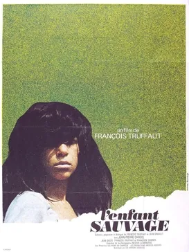

The genetics
No genetics appears; the film enters the database as a nature versus nurture story. The dispute between Pinel, who sees the boy as innately deficient, and Itard, who blames the deprivation of his early life and sets out to educate him, frames the question explicitly. The film, directed by François Truffaut, who also plays Itard, sides with nurture: it is about the importance of socialisation, and Victor's slow progress shows how much of what makes us human depends on care and on other people. It also shows the limits of a late start, as Victor masters only fragments of language. Modern research on severely deprived children supports the film's view that early experience, especially for language, is decisive. The story is a dramatisation of a real case, Victor of Aveyron, and of Itard's real attempts to educate him.
The story
In 1798 hunters capture a naked boy of about twelve living wild in the forests of Aveyron, in southern France. He cannot speak, and in Paris he is placed in an institute for deaf-mutes, where the eminent Professor Pinel judges him an idiot fit only for an asylum. The young doctor Jean Itard disagrees: he believes the boy's state is the result of his deprived, isolated life and that he can be educated. Itard takes him to his house outside Paris, names him Victor and, with his housekeeper Madame Guérin, patiently teaches him to dress, eat with a spoon, match objects and utter a few sounds, using rewards and sometimes punishments. Progress is slow and Victor once runs away, but he comes back. Based on Itard's real reports, the film ends with Victor partly socialised, having lost his capacity to live in the wild.